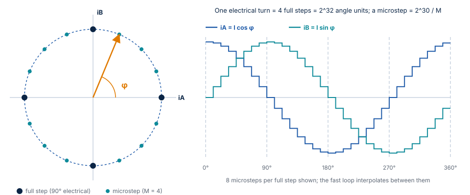
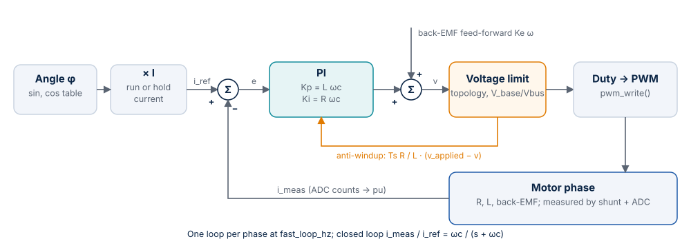
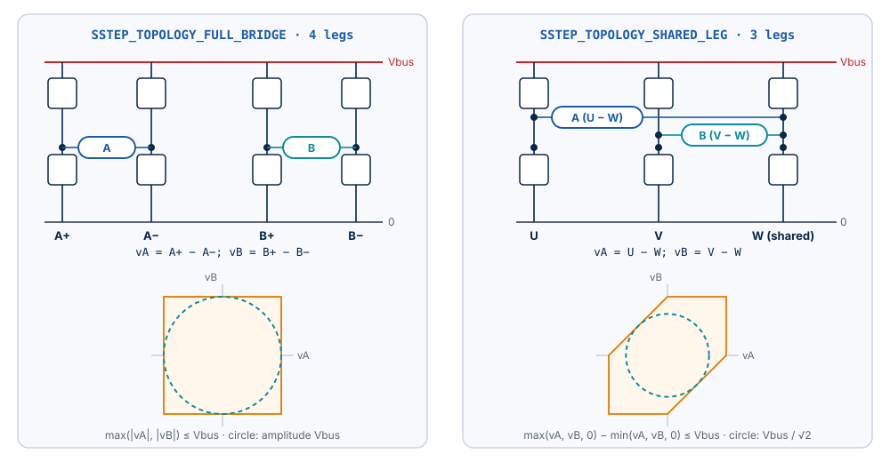
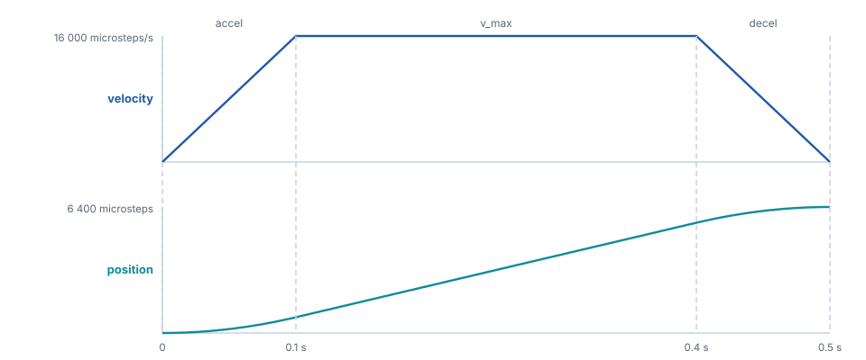

Motor Control¶
This chapter describes the algorithms of Stepper-C and the equations behind them: the
motor model, per-unit scaling, the current controller, microstepping, the motion
profile, the voltage limits of the two power stage topologies, the stall detection and
the numeric backends.
Every number in this chapter comes from the code or from the closed-loop tests on the
motor model (tests/unit/gtest_sstep_loop.cpp).
Motor model¶
A two-phase hybrid stepper motor with \(N_s\) full steps per revolution has \(p = N_s / 4\) pole pairs (50 for a 1.8° motor). With the rotor angle \(\theta\) and its speed \(\omega\), each phase is a resistance, an inductance and a back-EMF:
\(K_t\) is the torque constant [N·m/A]; in SI units it equals the back-EMF constant
[V·s/rad], the value entered as ke_uv_s_per_rad.
The library imposes the phase currents
where \(\varphi\) is the electrical angle commanded by the trajectory. The torque becomes
The rotor follows \(\varphi\) with a lag (the load angle) that grows with the load. The motor holds up to \(K_t I\) (0.42 N·m for 2 A with the 17HS19-2004S1) at a load angle of 90° and loses steps above it.
The closed-loop test with a 0.25 N·m load at 1 rev/s measures a load angle of 37.21°, against \(\arcsin(0.25 / 0.4172) = 36.83°\) predicted by the equation; with 0.50 N·m the motor slips, as expected.
Per-unit scaling¶
Internally every signal is a fraction of a base value, so that the same arithmetic works for a 0.5 A and a 10 A motor:
| Quantity | Base | Range inside the loops |
|---|---|---|
| Current | i_full_scale_ma: the current at ADC full scale |
-1 .. +1 pu |
| Voltage | vbus_nominal_mv: the nominal bus voltage |
-1 .. +1 pu for signals; up to ±65 536 pu in accumulators |
| Bus voltage | vbus_nominal_mv |
0 .. 2 pu |
| Angle | One electrical turn = \(2^{32}\) | uint32_t, wraps |
sstep_init() converts every engineering value of the configuration into per-unit
gains with integer arithmetic (\(2\pi \approx 710 / 113\), error \(8.5 \cdot 10^{-8}\)), so a fixed-point
build needs no floating point at all.
Microstepping¶

One full step is a quarter of an electrical turn (\(2^{30}\)). With microsteps \(= M\), one
microstep is \(2^{30} / M\) of the 32-bit angle; positions are kept in Q16 microsteps
(1/65 536 microstep) in 64 bits, so the angle is exact and never drifts.
The sine and cosine come from a quarter-wave table with linear interpolation
(SSTEP_CFG_SINE_TABLE_BITS, default \(2^8\) intervals, 257 entries in flash). Measured
worst-case error over a full turn:
| Table bits | Fixed point | Float |
|---|---|---|
| 6 | \(1.08 \cdot 10^{-4}\) (3.5 LSB of Q15) | \(7.5 \cdot 10^{-5}\) |
| 8 (default) | \(3.1 \cdot 10^{-5}\) (1.0 LSB of Q15) | \(4.8 \cdot 10^{-6}\) |
| 10 | \(3.1 \cdot 10^{-5}\) (1.0 LSB of Q15) | \(3.5 \cdot 10^{-7}\) |
With the fixed-point backend the default table is already at the resolution of Q15; a larger table only helps the float backend.
Between two slow-loop periods the fast loop advances the angle by a constant increment, so the current vector turns smoothly at the PWM rate instead of jumping once per millisecond.
Current control¶

Each phase has its own PI controller. The reference comes from the angle and the amplitude, the measurement from the ADC:
Gains. sstep_init() places the zero of the controller on the pole of the winding
(\(R / L\)), which leaves an integrator with the crossover frequency
\(\omega_c = 2\pi \cdot\) current_bw_hz:
The closed loop is a first-order low-pass with the requested bandwidth; no manual
tuning is needed. The bandwidth must not exceed fast_loop_hz / 4 (checked by
sstep_init()).
Back-EMF feed-forward. At speed the motor generates a voltage that the PI would otherwise have to compensate with an error. The library adds it in advance from the commanded speed:
with \(v\) in microsteps/s. With ke_uv_s_per_rad = 0 the feed-forward is off.
Anti-windup. When the requested voltage exceeds what the power stage can apply (see Voltage limits), the integrator is corrected by the difference between the applied and the requested voltage (back-calculation with the tracking time constant \(T_t = L / R\), gain \(T_s R / L\)). The integrator does not wind up while the voltage is limited.
Measured response (17HS19-2004S1, 24 V, 20 kHz, 1 kHz bandwidth, locked rotor, step 0 → 2 A, ADC 12 bits):
| Topology | Overshoot | Rise time 0–90 % | Settling ±2 % | Final value |
|---|---|---|---|---|
| Full bridge | 1.11 % | 0.350 ms | 0.400 ms | 2.0002 A |
| Shared leg | 1.11 % | 0.350 ms | 0.400 ms | 1.9999 A |
The float backend gives the same numbers within 0.01 %. A first-order system with 1 kHz bandwidth rises to 90 % in \(2.3 / \omega_c = 0.37\) ms; the small overshoot comes from the one-period delay between measurement and PWM update.
Voltage drive¶
Boards without current sensing use SSTEP_DRIVE_VOLTAGE: the controller is replaced
by \(v = R\, i_\mathrm{ref} + v_\mathrm{ff}\). The current settles at the reference at standstill (test:
2.0 A within 10 mA) but the torque drops at speed, where the inductance and the
error of the back-EMF estimate are not corrected. The overcurrent trip is not active in
this mode (there is no current measurement).
Bus voltage compensation¶
The controllers compute voltages in per unit of the nominal bus voltage. The fast loop converts them to duty cycles with the measured bus voltage (\(V_\mathrm{base} / V_\mathrm{bus}\), updated every slow period), so the phase voltage, and with it the current, does not depend on the supply. Test: with the supply at half its nominal value, the current still settles at 2.0 A within 4 mA.
Voltage limits¶

The two supported topologies differ in how much phase voltage they can apply:
| Topology | Legs | Phase voltages | Limit (relative to Vbus) | Sinusoidal amplitude |
|---|---|---|---|---|
SSTEP_TOPOLOGY_FULL_BRIDGE |
4: A+, A−, B+, B− | \(v_A = A^+ - A^-\), \(v_B = B^+ - B^-\) | \(\max(\lvert v_A \rvert, \lvert v_B \rvert) \le 1\) | \(V_\mathrm{bus}\) |
SSTEP_TOPOLOGY_SHARED_LEG |
3: U, V, W (shared) | \(v_A = U - W\), \(v_B = V - W\) | \(\max(v_A, v_B, 0) - \min(v_A, v_B, 0) \le 1\) | about \(V_\mathrm{bus} / \sqrt{2}\) |
When the request is beyond the limit, both phase voltages are scaled down by the same factor: the direction of the voltage vector is kept, only its length is reduced, and the anti-windup takes the difference into account.
Duty cycles. Full bridge: each phase is centred at 50 %. Shared leg: the shared leg W is placed in the middle of the available range:
The fourth compare value is 0 for the shared leg.
Consequence at speed. At 8 rev/s (2 A requested, 24 V) the measured current amplitude is 1.862 A with a full bridge and 1.557 A with a shared leg: the three-leg stage reaches its voltage limit first. Choose the supply voltage for the highest speed of the application.
Motion profile¶

The slow loop advances an integer trajectory once per period; positions are Q16 microsteps (64 bits), velocities Q16 microsteps per period, so a position is exact after any number of moves.
Move (sstep_move_to(), sstep_move_by()). In each period the planner chooses the
largest velocity from which it can still stop exactly on the target with the
deceleration limit:
with the deceleration \(d\) and the remaining distance \(r\), both per slow period,
then capped at v_max and changed by at most accel (speeding up) or decel (slowing down)
per period. The result is a trapezoid (or a triangle for short moves) that ends on the
target with zero velocity, without overshoot. A new target during a move is followed
smoothly: there is no velocity step, and a target behind the motor makes it decelerate,
reverse and approach from the other side.
Run (sstep_run()). Accelerate or decelerate with the limits to the requested
signed velocity and keep it. A reversal passes through zero with decel and then
accel.
Stop (sstep_stop()). Decelerate to zero with decel; the target becomes the
position where the motor stops.
Measured (16 microsteps, v_max 16 000 microsteps/s, accel 160 000
microsteps/s²): a move of 6 400 microsteps (2 revolutions) ends after 499 ms with the
rotor at 6400.00 microsteps and a largest load angle of 10.8°; a reversal from +4 to
−4 rev/s stays below a load angle of 8.7°.
Resolution. With slow_loop_hz = 1000 the velocity resolution is
\(1000 / 65536 = 0.015\) microsteps/s. sstep_set_motion_limits() rejects values that
round to zero or reach \(2^{30}\) Q16 per period.
Hold current¶
After hold_delay_ms without motion the current amplitude drops from i_run_ma to
i_hold_ma and on_event(SSTEP_EVENT_HOLD_CURRENT) is reported. Any motion switches
back to the run current in the same period. The hold current reduces heating at
standstill; the holding torque is \(K_t\, i_\mathrm{hold}\).
Stall detection¶
Without an encoder the library does not know where the rotor is. When the load exceeds
the torque, the rotor stops following the commanded angle: it stalls at a hard stop,
falls behind at speed, or slips under a load that the hold current cannot hold, while
the commanded position keeps its value. The stall detector estimates the back-EMF from
the quantities the fast loop already has and raises SSTEP_FAULT_STALL when the rotor
does not move as commanded. It is off by default (stall_time_ms = 0) and needs
SSTEP_DRIVE_CURRENT and ke_uv_s_per_rad > 0.
Reference case. A 17HS19-2004S1 on a three-leg stage at 24 V, 1.5 A run current and
0.5 A hold current after 500 ms, holds a constant 0.12 N·m load at the run current
(\(K_t \cdot 1.5 = 0.31\) N·m) but not at the hold current (0.10 N·m). At the run → hold change
the rotor slips and spins away; without stall detection the driver stays in
SSTEP_STATE_HOLDING with no fault. With the settings below it reports
SSTEP_FAULT_STALL 48 ms after the load angle passes 90°.
Principle¶
The winding equation gives the back-EMF from the applied voltage and the measured current. With the convention of the library (\(i_A = I\cos\varphi\), \(i_B = I\sin\varphi\)), the back-EMF of a rotor at the angle \(\theta\) and the speed \(\omega\) is
Rotated into the frame of the commanded current (d along the current, q 90° ahead):
The magnitude of the vector is the rotor speed, its angle the load angle \(\delta\).
- In motion, a synchronous rotor has \(\omega = \omega_c\) and a moderate load angle, so \(e_q \approx K_e\,\omega_c \cos\delta\) is a large constant of the sign of the motion. A stalled rotor gives no back-EMF; a rotor that slips turns relative to the commanded frame and its back-EMF averages out. Both make \(e_q\) fall far below \(K_e\,\omega_c\).
- At rest, the commanded frame stands still, so any lasting back-EMF means that the rotor turns. A slipping rotor makes the vector rotate at its electrical speed.
Equations¶
These are the exact operations of the library, in their order, so that a model can
reproduce them (Scilab, Python). \(T_s = 1 /\) fast_loop_hz, \(p = N_s / 4\), \(M\) = microsteps;
voltages are per unit of vbus_nominal_mv in the fast loop and millivolts in the slow
loop.
Fast loop, every period \(k\), after the PI and the voltage limit (phase \(x \in \{A, B\}\)):
This is \(v - R\,\frac{i[k] + i[k-1]}{2} - L\,\frac{i[k] - i[k-1]}{T_s}\): the winding equation
integrated over the period from sample \(k-1\) to \(k\) with the trapezoidal rule, written with two
gains computed by sstep_init(). \(v_x[k-2]\) is the phase voltage computed two calls earlier:
with the one-period computation delay, the compare values written in call \(k-2\) are
applied from sample \(k-1\) to sample \(k\). It is the voltage after the limit of the power stage
(what the bridge applies, not the PI output), so the estimate stays valid at the voltage
limit.
with \(\tau\) = stall_filter_us. \(\varphi[k]\) is the commanded angle of call \(k\). The voltage was averaged over the period
before it, so the estimate refers the rotor at the middle of that period to \(\varphi[k]\): the
load angle reads \(\Omega T_s / 2\) more than \(\varphi[k] - p\theta(t_k)\), 0.45° per rev/s at
20 kHz with 50 pole pairs.
Slow loop, every period \(n\), against the command of the slow period that just ended: velocity \(v_c\) [microsteps/s] and its back-EMF \(e_c = K_e\,\omega_c = K_e\,2\pi v_c / (N_s M)\) (the feed-forward value, saturated at 1 pu, converted to mV). \(\bar e_d\), \(\bar e_q\) are the filter outputs rounded to mV.
and SSTEP_FAULT_STALL when \(c \ge N\), with \(v_s\) = stall_speed, \(s\) = stall_sync_pct,
\(N\) = stall_time_ms · slow_loop_hz / 1000 and the slip threshold
\(e_s = K_e\, 2\pi\, v_s / (N_s M)\) rounded to mV. In integers: \(o\) is held in mV·\(2^{16}\), the
update divides with truncation, \(\Delta - o\) uses \(o\) truncated to mV, and the magnitude is
compared as a sum of squares. sstep_enable() clears \(\bar e\), \(o\), \(c\) and the voltage
history (\(v[k-1] = v[k-2] = 0\), \(i[k-1]\) = the last measurement).
Diagnostics in sstep_get_status(): emf_d_mv and emf_q_mv are \(\bar e_d\), \(\bar e_q\);
rotor_velocity is \(\mathrm{sgn}(\bar e_q)\,\lvert \bar e \rvert\, N_s M / (2\pi K_e)\);
load_angle_cdeg is \(\mathrm{atan2}(\sigma\bar e_d,\; \sigma\bar e_q)\) with \(\sigma = \mathrm{sgn}(v_c)\) (at rest
\(\mathrm{sgn}(\bar e_q)\)), in 0.01°, positive when the rotor lags in the positive direction (the sign
of the motor torque); stall_level_pct is \(100\,c / N\).
Design decisions¶
| Decision | Reason |
|---|---|
| Filter in the commanded frame | A synchronous back-EMF is constant there at any speed, so a millisecond filter neither attenuates nor delays it. In the phase frame the back-EMF at 10 rev/s is a 500 Hz sine that such a filter would suppress. |
| In motion, only \(e_q\) | A resistance error (\(R\) of a hot winding) adds \(\Delta R\, I\) along the current, the d axis, and does not change \(e_q\). An inductance error adds \(\Delta L\, I\, p\,\omega\) along q: it scales \(e_q\) by \(1 + \Delta L\, I\, p / K_e\) (−22 % for \(L\) −20 % at 1.5 A), at every speed. |
| Threshold relative to \(K_e\,\omega_c\) | The synchronous value \(\cos\delta\) does not depend on the speed; a fixed fraction separates a loaded synchronous rotor (0.5 to 1) from a stall or a slip (about 0, ±0.25 with the \(L\) error). |
| At rest, learned offset | A resting rotor has no back-EMF, so a constant estimate is an observer error: \(\Delta R\, I\), the dead-time voltage, current-sensor offsets (0.91 V at 1.5 A in the worst case below, more than the threshold). Its running mean is subtracted. A slipping rotor makes the vector rotate, which averages out of the mean and stays in \(\Delta - o\). |
| Offset time constant = trip time | An offset that appears at once (enable, run → hold) decays below \(e_s\) after \(N \ln(\text{offset} / e_s)\) periods. That is less than \(N\) for an offset below \(e \cdot e_s\) (2.7 times the threshold), so it never trips. A slip at \(\Omega \gg 1 / T_N\) (\(T_N\) = stall_time_ms) passes the mean unchanged. |
| Below \(v_s\), deviation from \((0, e_c)\) | The motor may move slowly right after sstep_enable(), without a rest period to learn the offset: the deviation from the expected back-EMF has the same zero mean at rest and in slow motion. |
| Up/down counter | A stall keeps the condition true: the fault comes \(N\) slow periods after it begins. Short events (enable, current steps, resonance, reversal through zero) count down again; a condition true less than half of the time does not accumulate. |
| Decision in the slow loop | The fast loop only estimates and filters; the comparison, the offset tracking and the counter run at 1 kHz on integer millivolts, identical in both numeric backends. |
Choosing the parameters¶
| Field | Example (17HS19, ESC1) | How to choose |
|---|---|---|
stall_time_ms |
50 | Detection delay after the stall; longer is more robust. Keep an offset at rest below \(e \cdot e_s\) (see above). |
stall_filter_us |
1000 | 0.5 to 2 ms. Shorter follows faster slips but passes more current quantization noise: one ADC count changes \(\hat e\) by \(L\,\Delta i / \tau\) (87 mV for 29 mA at 1 ms). A rotating vector is filtered to at most \(K_e / (p\,\tau)\) (4.2 V at 1 ms), which must stay well above \(e_s\). |
stall_speed |
1600 (0.5 rev/s, \(e_s\) = 655 mV) | Above the back-EMF noise at rest; the commanded speed from which the synchronism check runs. |
stall_sync_pct |
50 | Below \(\cos\delta \cdot (1 + \Delta L\, I\, p / K_e)\) at the worst synchronous operating point. At the voltage limit the current lags its reference and the ratio drops (0.46 at 11 rev/s on a 24 V three-leg stage); use 30 to 40 near the limit. |
Measured on the motor model¶
Tests SstepLoop.Stall* and SstepStall.* with the example settings, fixed point and
float backend alike. The worst-case plant differs from the configuration as a real board
does: \(R\) +30 % (hot winding), \(L\) −20 % (saturation), 70 mV dead-time error per leg
(24 V, 20 kHz), ESC1 current quantization (29 mA per count instead of 2 mA) and a detent
torque of 0.02 N·m.
| Case | Result |
|---|---|
| Reference case, 0.12 N·m at the hold current (nominal and worst-case plant) | SSTEP_FAULT_STALL 48 ms after the load angle passes 90° |
| Rotor blocked at 3 rev/s (hard stop), either direction, both topologies, worst case | SSTEP_FAULT_STALL after 50.0 ms |
| Rotor turning at 1 rev/s with the command at rest | SSTEP_FAULT_STALL after 50.0 ms |
| Rotor imposed at 3 rev/s | \(\lvert \bar e \rvert\) 3936 mV against \(K_e\,\omega\) = 3932 mV; rotor_velocity 9609 microsteps/s for 9600; load angle 10.27° (model 10.28°) |
| Enable, run → hold, 0.07 N·m through run → hold, 6400-microstep move, reversal ±4 rev/s and stop, runs at 0.125, 0.25, 0.47, 1, 2, 8, 9.5 and 11 rev/s | No fault. Largest detector level 6 % (nominal plant), 32 % (worst case) |
The motor model of this repository shows no sustained mid-band oscillation between 8 and 11 rev/s; those runs check the voltage limit and the current lag. A 0.09 N·m load at the run → hold change is a real slip in the model (the undamped rotor overshoots past 90°) and is reported.
Cost¶
| Fixed point | Float | |
|---|---|---|
| Fast loop, added per period | 4 gain multiplications, 4 Q15 multiplications, 2 filter updates, 10 saturating additions | Same operations in float |
Fast loop, executed instructions without / with stall detection (-Os) |
1035 / 1510 | 720 / 933 |
Same with -O2 |
666 / 912 | 680 / 921 |
| Slow loop, added | 167 instructions (-Os) |
110 instructions |
sstep_get_status() |
1202 instructions (-Os; integer CORDIC and square root) |
1148 |
| RAM per instance, added | 96 B (Cortex-M4) | 96 B |
Instructions counted on a Cortex-M4 image (GCC 15.2) in an instruction-set emulator,
mean over 600 fast-loop periods while accelerating to 3 rev/s; on Cortex-M4 most of them take one cycle. At
170 MHz and 20 kHz the observer takes about 1.5 µs (-O2) to 2.8 µs (fixed point,
-Os) of the 50 µs period. With stall_time_ms = 0 the fast loop skips the observer
(one comparison).
Limits¶
- Below
stall_speed, a rotor that stops while the command creeps slowly is not seen: its back-EMF is close to zero either way. Only a rotor faster than the command is. - The fault comes
stall_time_msafter the stall begins; the position is lost from the beginning of the stall. - During a slip at rest
rotor_velocityis low (the filter attenuates the rotating vector: about 10 000 for 27 000 microsteps/s); it is accurate in synchronism. An inductance error biases it too (26 700 for 31 400 microsteps/s with \(L\) −20 % at 10 rev/s). - The observer needs the phase currents (
SSTEP_DRIVE_CURRENT) and \(K_e\). - Verified on the motor model of the tests; the closed-loop validation with the sfs-stepper-sim plant and on hardware follows.
Numeric backends¶
| Fixed point | Float | |
|---|---|---|
| Select | SSTEP_MATH_BACKEND=FIXED (default) |
SSTEP_MATH_BACKEND=FLOAT |
| Signals | Q15 in int16_t |
float |
| Accumulators | Q15 in int32_t (±65 536) |
float, clamped to the same range |
| Integrators | Q27 in int32_t (±16 pu) |
float, clamped to ±16 |
| Gains | Q15 mantissa and power-of-two exponent (−16 .. 15) | float |
| Arithmetic | Saturating; rounding half up; no undefined shifts | Saturating to the same ranges |
| Typical target | Cortex-M0/M0+/M3, RISC-V without F extension | Cortex-M4F/M7/M33 with FPU, STM32G4 |
Both backends saturate at the same limits, so the control behaves the same; the unit tests and the closed-loop tests run against both. The motion planner and the configuration are integer code in both backends.